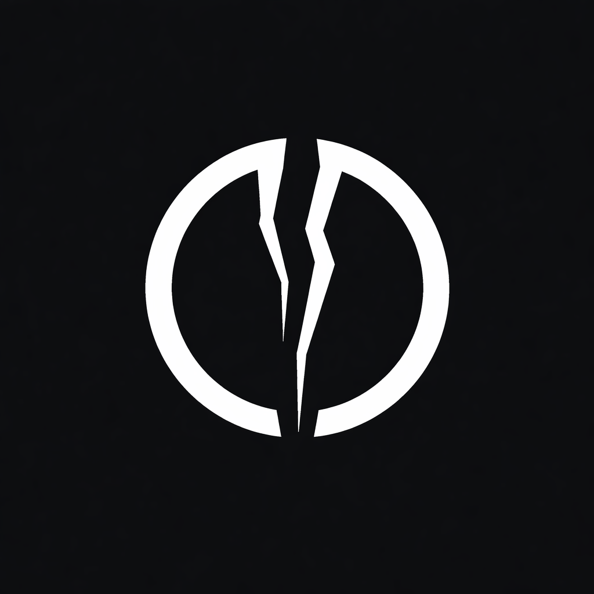
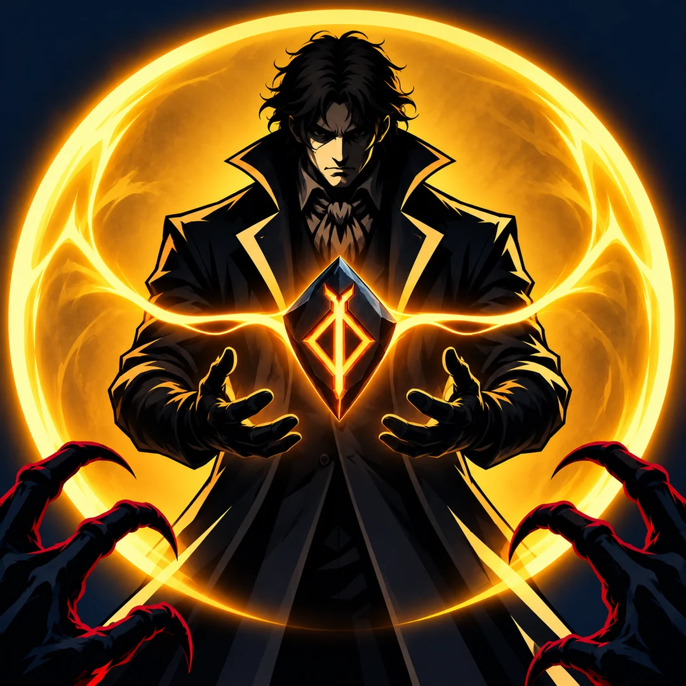
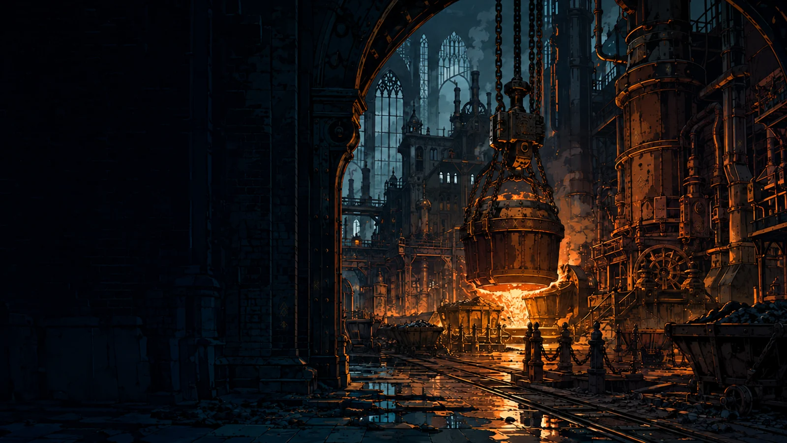
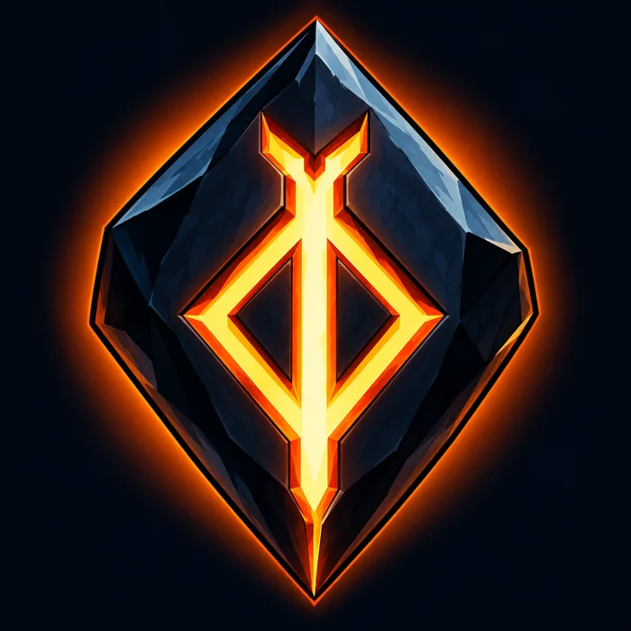

The Corebreach press room
Stories start here.
A little background. A few glimpses into our worlds.
Everything you need to share what we’re making.
The studio
About Corebreach.
Corebreach is an independent game development studio drawn to atmospheric worlds, deep systems, and the joy of experimentation. Its first featured game, Runefall, pairs dark fantasy action-survival with runestone-driven skills and character building.
Runefall is currently in development. Future games will share the Corebreach home at corebreach.io.
Our first featured world
RUNEFALL
Runefall is a dark fantasy action-survival game where your build is your best defense against a relentless horde. Explore gothic environments, inscribe powerful runestones, and discover skill synergies that turn a desperate expedition into a display of overwhelming power.
Weapons, equipment, and a branching passive tree give players room to experiment. Fight through forges, ruined chapels, streets, and catacombs, then test your build against the bosses waiting beyond the horde.
- Developer
- Corebreach
- Genre
- Action survival / dark fantasy
- Status
- In development
- Release date
- To be announced
- Platforms in development
- Windows, Linux, Android
- Website
- corebreach.io
What makes a run.
- Runestone-driven skills. Inscribe and combine runestones to discover interactions between skills and resources.
- Room to experiment. Shape a character through weapons, gear, and a branching passive tree.
- A gothic world under siege. Battle growing enemy hordes and bosses across distinctive environments.
- Build, fight, rethink. Take what you learn from each expedition into the next experiment.
Platform information reflects current development builds. Store links and release timing will be shared when ready. Follow the development snapshot for current milestones.
Straight from the game
A closer look.
Original PNG screenshots are included in the full press kit. Select an image for its web version.


From the art desk
Identity & atmosphere.


Corebreach logo ↓ PNG

Runeweaver artwork ↓ WEBP

The Forge illustration ↓ WEBP

Ember Glyph artwork ↓ WEBPIllustrations and concept artwork are promotional art. The screenshots above show actual game environments and interfaces. The full press kit includes original-resolution artwork.
See it in motion
A first look at the fight.
A silent capture of the current development build, featuring runestone combat in the Forge. Recorded in a controlled capture session; the game’s visuals and combat run in real time.
Keep in touch
Let’s talk.
For press inquiries, creator coverage, or questions about Corebreach and Runefall, reach us at:
support@corebreach.ioUsing these materials
These materials are provided for editorial coverage, reviews, videos, and discussion of Corebreach and Runefall. Please credit Corebreach and link to corebreach.io. Preserve the proportions of the company logo, and identify concept artwork as artwork rather than gameplay.
Game content is in development and may change. For other uses of these assets, please get in touch. © 2026 Corebreach.